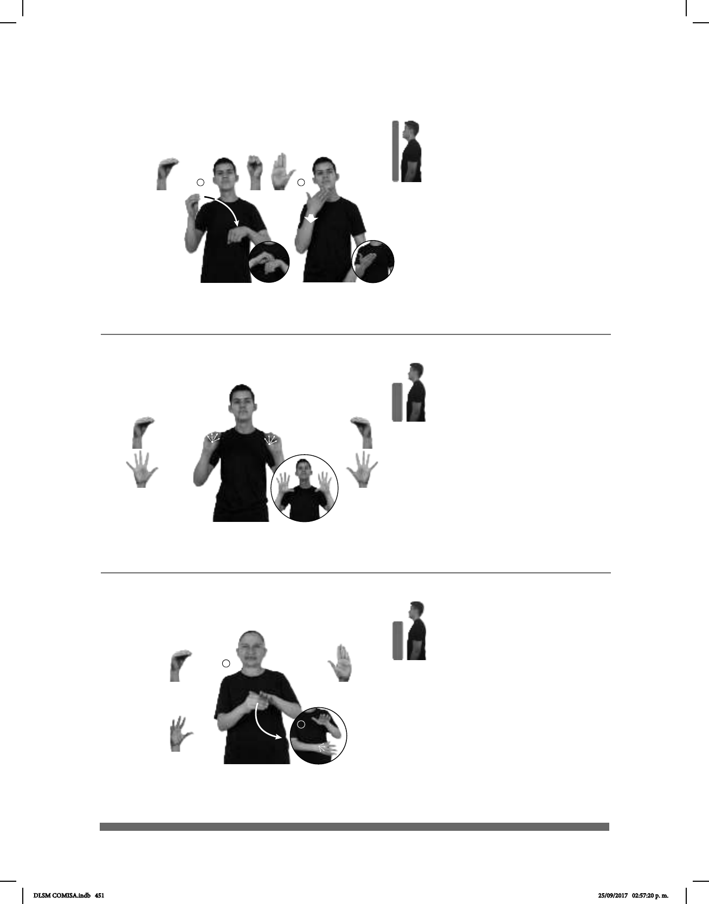

451
Seña: SS
Seña que pasa de O.5
a 5.1
Palmas hacia fuera.
A la altura del pecho.
Movimiento: Los dedos se extienden.
Cejas hacia
arriba.
v. tr. Poner a funcionar un
aparato o mecanismo que trabaja
generalmente con electricidad o gas.
(O-71) Prender – Encender
SIEMPRE pro-YO #TV PRENDER TARDE
Yo siempre prendo la televisión en la tarde.
1
2
Seña: SB
MD seña que pasa de O.5 a
5.2, MB B-P.2
MD palma hacia la izquierda.
MB palma hacia abajo.
La MD inicia debajo de MB y
termina a la altura de la cintura, del centro al
lado izquierdo. MB a la altura del pecho.
Movimiento: El brazo de MD se mueve
formando un arco mientras los dedos se
extienden.
Boca abierta y
mostrando los dientes.
sust. Circunstancia que
comportamiento y que en realidad no existió o
no tuvo que ver con lo que hizo.
(O-72)
Pretexto – Excusa (A)
_______________________neg_
DECIR VERDAD pro-TÚ DEBER NADA PRETEXTO
Debes decir la verdad, nada de pretextos.
1 2
(O-70)
Seña: SC: I. SB; II. SM
I. MD O.5, MB S.1;
II. B-P.2
I. MD y MB palmas
hacia abajo; II. Palma hacia adentro.
I. MD inicia a la altura de
los hombros y termina sobre MB. MB a
la altura del pecho; II. Sobre la barbilla.
Movimiento: I. La MD se mueve
formando un arco; II. Recto hacia el
frente.
v. intr. Orden con la que se
mandata a alguien a actuar bien o de
manera correcta.
Se trata de la seña
PONER más la seña BIEN.
QUIZÁS pro-TÚ PORTAR BIEN, FIESTA pro-TÚ IR
DLSM COMISA.indb 451 25/09/2017 02:57:20 p. m.